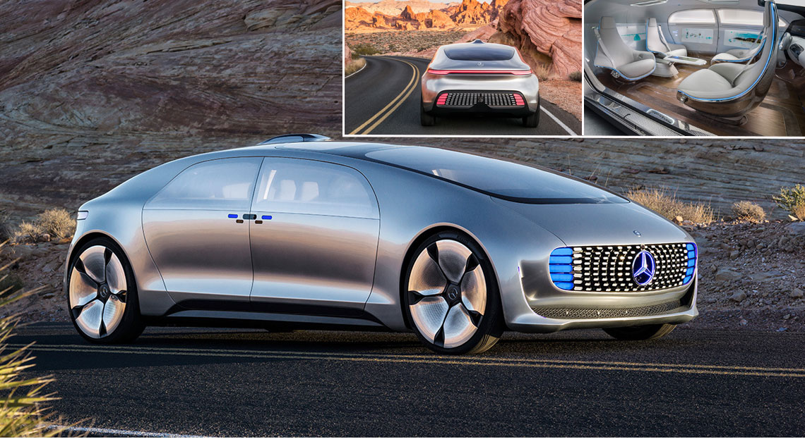

Véhicules autonomes

Modèle: F 015 Luxury in Motion
Caractéristiques :
Avec le F 015, les designers et les ingénieurs ont été au-delà de la seule conception
d'un prototype : ils ont prouvé que la conduite autonome donnerait naissance à une nouvelle
forme de mobilité. Le F 015 est propulsé par deux moteurs électriques développant ensemble
quelque 200 kW. Le premier est alimenté par une batterie, le second par une pile à combustible.
Ce système hybride permet de parcourir jusqu’à 1.100 kilomètres en parfaite autonomie, dans un
silence souverain et sans la moindre émission polluante. Une nouvelle forme de mobilité est née !
Prix: 210 000€